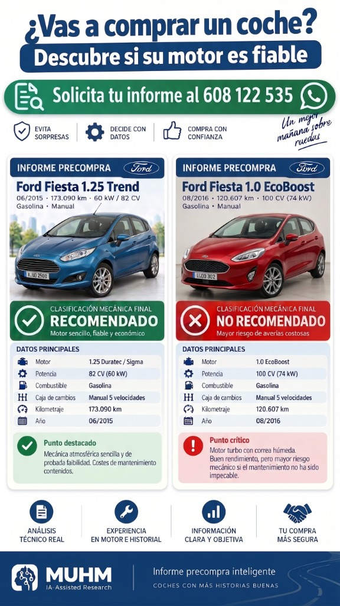
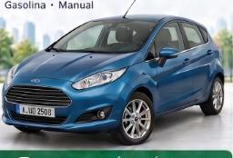
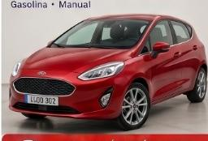
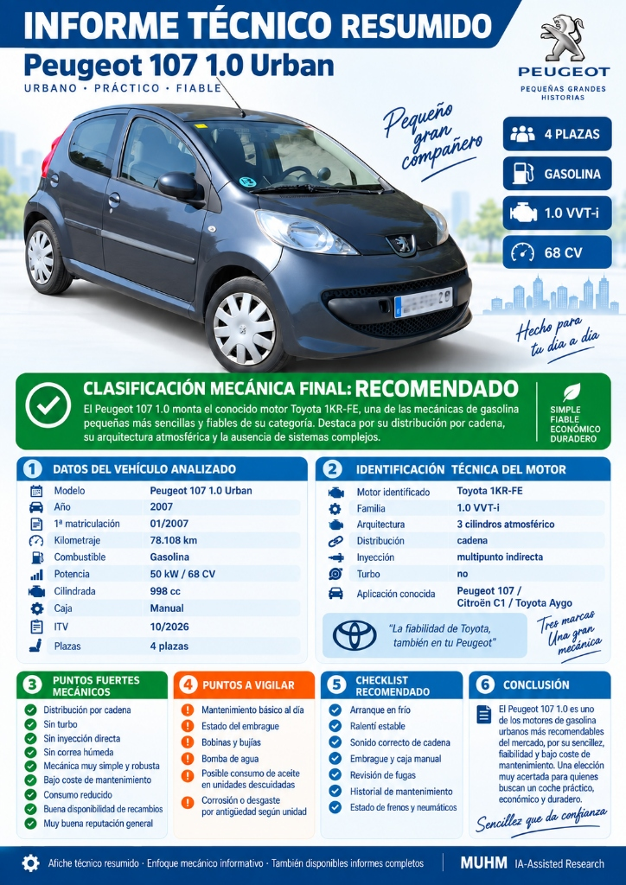

Dos coches pueden ser idénticos por fuera, tener el mismo año y la misma ITV limpia, pero esconder motores con destinos opuestos: uno durará 300.000 km y el otro romperá por defecto de fábrica.
Auditamos de forma personalizada el código exacto de motor, la transmisión, las campañas de taller europeas y el historial real de averías antes de que firmes o transfieras tu dinero.

Los compraventas y particulares limpian la tapicería y pasan la ITV antes de vender. Pero la ITV no abre el motor ni comprueba los fallos endémicos de diseño que arruinan a miles de conductores cada mes.
La trampa: Correa de distribución sumergida en el aceite del motor (wet belt). La goma se degrada químicamente, se deshilacha y los restos taponan la chupona del aceite.
La trampa: Mismo concepto de correa bañada en aceite. Extremadamente sensible al tipo exacto de aceite y a los intervalos. La correa de la bomba de aceite también se degrada.
La trampa: Defecto congénito en segmentos y calibración de inyección directa. Provoca un consumo brutal de aceite (más de 1 litro cada 1.000 km) sin fugas visibles.
La trampa: Cadena de distribución ubicada en la parte posterior del motor (lado caja). Desgaste prematuro de patines plásticos y dilución severa de aceite por regeneraciones DPF.
En la misma carrocería de un Ford Fiesta o un Peugeot 107/208 conviven motores que son tanques indestructibles y motores que son bombas de relojería. Nuestros informes te dicen con exactitud matemática qué llevas bajo el capó.
Mira este caso real que analizamos para compraventa: dos Ford Fiesta con carrocería parecida y precios similares en portales de segunda mano.


¿Hubieras sabido diferenciar estas dos mecánicas mirando solo las fotos de Wallapop o Coches.net? Nosotros investigamos tu unidad a fondo.
Ver planes de informe desde 15 € →Nada de textos vagos generados por un chatbot común. Son informes estructurados, redactados con rigor técnico, maquetados para consulta clara y listos para negociar el precio con el vendedor.

Diseñado para quienes están comparando coches en portales o subastas y necesitan una respuesta clara, visual y directa para pujar, negociar o descartar.
Riesgo crítico en cadena de distribución trasera, guías y dilución de gasóleo por DPF.
Para coches de mayor valor económico, compras en concesionario o profesionales de la compraventa que necesitan un documento pericial completo para negociar el precio a la baja o proteger su capital.
Una inversión mínima que te protege de averías de 4.000 € o te da argumentos técnicos sólidos para rebajar el precio de venta.
Afiche técnico visual en 1 página A4
Afiche visual + Dossier técnico multi-página
Dossier técnico completo de 4 a 6 páginas A4
🔒 Sin suscripciones ni cobros recurrentes. Pagas únicamente por el coche concreto que estás evaluando comprar.
Las búsquedas convencionales mezclan opiniones subjetivas de foros y las IA generalistas inventan datos. Nuestro método es un sistema técnico riguroso.
| Aspecto | Búsqueda rápida en Google / Foros | Preguntar a una IA genérica | Auditoría MUHM IA-Assisted |
|---|---|---|---|
| Identificación del Motor | Se queda en el nombre comercial (ej. "Peugeot 1.2"). | Alucina códigos y confunde generaciones. | Identificación exacta por código, cilindrada y año frontera (ej. EB2 vs EB2DTS). |
| Binomio Motor + Caja | Opina del motor sin saber qué caja lleva. | Rara vez relaciona fallos de transmisión. | Evaluación conjunta: Una mecánica buena puede ser descartada si lleva una caja robotizada o DSG seco. |
| Bases de Datos | Hilos de foros antiguos de 2012 sin actualizar. | Respuestas genéricas tipo "hazle el mantenimiento". | Boletines técnicos europeos (TSB), campañas de llamada a revisión y talleres especializados. |
| Objetividad | Sesgada por fanáticos de marcas o comerciales. | Tono complaciente sin veredicto claro. | Semáforo tajante: Si el motor tiene riesgo congénito caro, te decimos que no lo compres. |
Sin registros complicados. Directamente por WhatsApp con un especialista.
Mándanos por WhatsApp el enlace del anuncio (Wallapop, Coches.net, AutoScout, etc.) o una foto de la ficha técnica / datos del vehículo.
Cruzamos código motor, año de matriculación, historial de campañas de fabricante, caja de cambios y puntos críticos de la unidad.
Elaboramos tu auditoría técnica y te enviamos el documento maquetado directamente a tu WhatsApp, listo para tomar una decisión informada.
Cada informe es elaborado de forma individualizada por especialistas que contrastan los datos exactos del coche con catálogos técnicos europeos y campañas oficiales. Nos esforzamos por darte una respuesta ágil y con el rigor que requiere una inversión de miles de euros. Te avisamos por WhatsApp en cuanto el documento esté listo para descargar.
Con el enlace del anuncio en portales como Wallapop, Coches.net o AUTO1 suele ser suficiente. Si tienes acceso a la ficha técnica (foto del permiso de circulación o apartados D.2, P.1, P.2), el análisis puede llegar al nivel exacto de código motor de recambios.
No lo sustituye, sino que te ahorra pagar revisiones inútiles. Si un coche monta un motor con fallo catastrófico garantizado (como un 1.2 PureTech con correa deshecha o un Ingenium con cadena trasera estirada), no necesitas gastar 150 € en llevarlo a un mecánico; directamente lo descartas desde tu sofá. Y si la mecánica es recomendada, te damos el checklist exacto para que tú o tu mecánico sepáis dónde mirar.
Trabajamos con ambos. Para particulares, el informe evita la ruina económica de una mala compra. Para compraventas y profesionales de subastas (AUTO1, BCA, etc.), permite filtrar miles de lotes rápidamente sin riesgo de garantías posventa caras.
Una consulta técnica de 15 € te puede ahorrar 4.000 € en el taller. Escríbenos ahora mismo.
Consultar coche por WhatsApp: 608 122 535 Respuesta directa y personalizada · Asesoramiento honesto e independiente